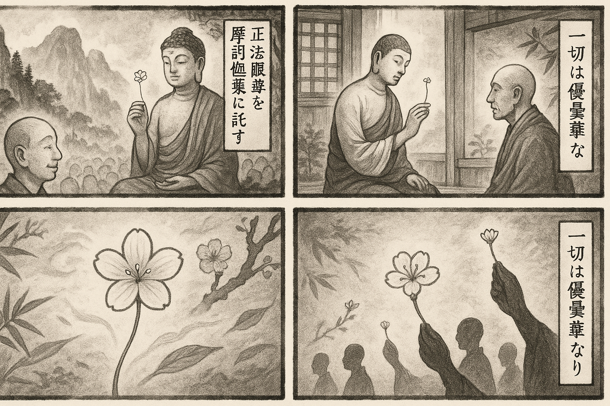

七十五巻 巻一覧
正法眼藏第64 優曇華
本ページの導入・語彙・深掘り・クイズは tools/regen_volume_intro_from_corpus.py が OpenAI API で生成したものです（入力は当巻冒頭原文の抜粋）。内容はモデル出力のため、重要箇所は必ず原文・教本と照合してください。
出典: https://shomonji.or.jp/zazen/doc/genzou.html
（ローカル生成の全文: 全文ページ）
この巻の位置（導入）
靈山百萬衆前、世尊拈優曇華瞬目。于時摩訶迦葉、破顔微笑。
世尊云、我有正法眼藏涅槃妙心、附屬摩訶迦葉。
語彙の足場
- 優曇華：仏教において非常に稀に咲く花の象徴であり、特に真理や悟りの象徴として用いられる。
- 世尊：仏陀を指し、特に釈迦牟尼を指す言葉。
- 摩訶迦葉：釈迦の弟子の一人で、仏教の教えを受け継いだ重要な人物。
- 拈華：花を手に取る行為を指し、特に教えを伝える象徴的な行為として重要視される。
- 正法眼蔵：仏教の真理や教えを象徴する概念で、特に道元によって強調された。
- 瞬目：瞬きのことで、特に仏教においては一瞬の悟りや理解を象徴する。
本文（冒頭・抜粋）
出典はリポジトリ内 doc/正法眼蔵.txt です。原文の参照元: https://shomonji.or.jp/zazen/doc/genzou.html
靈山百萬衆前、世尊拈優曇華瞬目。于時摩訶迦葉、破顔微笑（靈山百萬衆の前にして、世尊、優曇華を拈じて瞬目したまふ。時に摩訶迦葉、破顔微笑せり）。
世尊云、我有正法眼藏涅槃妙心、附屬摩訶迦葉（我に正法眼藏涅槃妙心有り、摩訶迦葉に附屬す）。
七佛諸佛はおなじく拈華來なり、これを向上の拈華と修證現成せるなり。直下の拈花と裂破開明せり。
しかあればすなはち、拈華裏の向上向下、自他表裡等、ともに渾華拈なり。華量佛量、心量身量なり。いく拈華も面面の嫡嫡なり。附屬有在なり。世尊拈華來、なほ放下著いまだし。拈華世尊來、ときに嗣世尊なり。拈花時すなはち盡時のゆゑに同參世尊なり、同拈華なり。
いはゆる拈花といふは、花拈華なり。梅華春花、雪花蓮華等なり。いはくの梅花の五葉は三百六十餘會なり、五千四十八卷なり、三乘十二分教なり、三賢十聖なり。これによりて三賢十聖およばざるなり。大藏あり、奇特あり、これを華開世界起といふ。一華開五葉、結果自然成とは、渾身是己掛渾身なり。桃花をみて眼睛を打失し、翠竹をきくに耳處を不現ならしむる、拈花の而今なり。腰雪斷臂、禮拜得髓する、花自開なり。石碓米白、夜半傳衣する、華已拈なり。これら世尊手裡の命根なり。
おほよそ拈華は世尊成道より已前にあり、世尊成道と同時なり、世尊成道よりものちにあり。これによりて、華成道なり。拈華はるかにこれらの時節を超越せり。諸佛諸祖の發心發足、修證保任、ともに拈華の春風を蝶舞するなり。しかあれば、いま瞿曇世尊、はなのなかに身をいれ、空のなかに身をかくせるによりて、鼻孔をとるべし、虛空をとれり、拈華と稱ず。拈花は眼睛にて拈ず、心識にて拈ず、鼻孔にて拈ず、華拈にて拈ずるなり。
おほよそこの山かは天地、日月風雨、人畜草木のいろいろ、角角拈來せる、すなはちこれ拈優曇花なり。生死去來も、はなのいろいろなり、はなの光明なり。いまわれらが、かくのごとく參學する、拈華來なり。
佛言、譬如優曇花、一切皆愛樂（譬へば優曇花の如し、一切皆愛樂す）。
いはくの一切は、現身藏身の佛祖なり、草木昆蟲の自有光明在なり。皆愛樂とは、面面の皮肉骨髓、いまし活鱍鱍地なり。
しかあればすなはち、一切はみな優曇華なり。かるがゆゑに、すなはちこれをまれなりといふ。
瞬目とは、樹下に打坐して明星に眼睛を換却せしときなり。このとき摩訶迦葉、破顔微笑するなり。顔容はやく破して拈華顔に換却せり。如來瞬目のときに、われらが眼睛はやく打失しきたれり。この如來瞬目、すなはち拈華なり。優曇華のこころづからひらくるなり。
拈花の正當恁麼時は、一切の瞿曇、一切の迦葉、一切の衆生、一切のわれら、ともに一隻の手をのべて、おなじく拈華すること、只今までもいまだやまざるなり。さらに手裡藏身三昧あるがゆゑに、四大五陰といふなり。
我有は附囑なり、附囑は我有なり。附囑はかならず我有に罣礙せらるるなり。我有は頂𩕳なり。その參學は、頂𩕳量を巴鼻して參學するなり。我有を拈じて附囑に換却するとき、保任正法眼藏なり。祖師西來、これ拈花來なり。拈華を弄精魂といふ。弄精魂とは、祗管打坐、脱落身心なり。佛となり祖となるを弄精魂といふ、著衣喫飯を弄精魂といふなり。おほよそ佛祖極則事、かならず弄精魂なり。佛殿に相見せられ、僧堂を相見する、はなにいろいろいよいよそなはり、いろにひかりますますかさなるなり。さらに僧堂いま板をとりて雲中に拍し、佛殿いま笙をふくんで水底にふく。到恁麼のとき、あやまりて梅華引を吹起せり。
いはゆる先師古佛いはく、
瞿曇打失眼睛時、
雪裡梅花只一枝。
而今到處成荊棘、
却笑春風繚亂吹。
（瞿曇眼睛を打失する時、雪裡の梅花只だ一枝なり。而今到處に荊棘を成す、却つて笑ふ春風の繚亂として吹くことを。）
いま如來の眼睛あやまりて梅花となれり。梅花いま彌綸せる荊棘をなせり。如來は眼睛に藏身し、眼睛は梅花に藏身す、梅花は荊棘に藏身せり。いまかへりて春風をふく。しかもかくのごとくなりといへども、桃花樂を慶快す。
先師天童古佛云、靈雲見處桃花開、天童見處桃花落（靈雲の見處は桃花開、天童の見處は桃花落なり）。
しるべし、桃花開は靈雲の見處なり、直至如今更不疑なり。桃花落は天童の見處なり。桃花のひらくるは春のかぜにもよほされ、桃花のおつるは春のかぜににくまる。たとひ春風ふかく桃花をにくむとも、桃花おちて身心脱落せん。
正法眼藏優曇華第六十四
爾時寛元二年甲辰二月十二日在越宇吉峰精藍示衆
図解（4コマ・AI生成）
教義の根拠は本文・出典に従い、漫画は比喩の補助に留めてください。

深掘り（読解の手掛かり）
- 世尊が優曇華を拈じることで、教えを示した。
- 摩訶迦葉が微笑した瞬間は、深い理解を示す象徴的な行為である。
- 拈華は仏教の教えを伝えるための重要な行為とされ、様々な解釈が存在する。
確認（形成評価）
各設問の下の「採点」で正誤を表示します（ブラウザ内のみ。ログは送りません）。